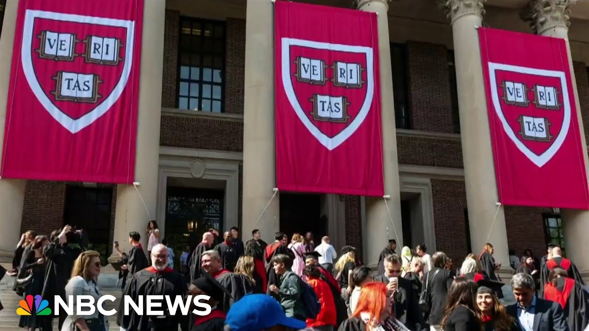

【法官延长命令，阻止特朗普禁止哈佛招收外国学生】
Summary: Harvard wins court battle against Trump administration's ban on enrolling international students, with a federal judge maintaining the block indefinitely as legal proceedings continue.
摘要： 哈佛在与特朗普政府禁止招收国际学生的法庭斗争中获胜，联邦法官无限期维持禁令暂停，法律诉讼仍在继续。

⏱️ Estimated Reading Time: 5 min
Well, speaking of students, Harvard is scoring a win against the Trump administration in court today after the school was banned from enrolling international students.
说到学生，哈佛今天在法庭上对特朗普政府取得了一场胜利，此前该校被禁止招收国际学生。
A federal judge has decided to keep blocking the ban indefinitely as the legal battle played out in a Boston courtroom.
联邦法官决定无限期维持禁令暂停，法律诉讼在波士顿法庭继续进行。
Harvard held its graduation ceremony just miles away.
哈佛在几英里外举行了毕业典礼。
Watch this.
看这个。
That is Harvard's president there.
那是哈佛的校长。
He received a minute-long standing ovation from students and faculty when he got up to the podium.
他走上讲台时，学生和教职员工起立鼓掌一分钟。
NBC News correspondent Stephanie Gosk is live outside the courthouse in Boston for us today.
NBC新闻记者斯蒂芬妮·戈斯克今天在波士顿法院外为我们进行现场报道。
So Steph, Harvard says many international students are afraid and they're asking about transferring.
斯蒂芬，哈佛表示许多国际学生感到害怕，并询问转学事宜。
What impact is this ban having even if it remains temporarily blocked?
即使禁令暂时被暂停，它产生了什么影响？
Is there a chilling effect?
是否存在寒蝉效应？
Yeah.
是的。
Well, I mean, this certainly was a win for Harvard, but a small win because there is no decision.
嗯，这对哈佛来说确实是一场胜利，但只是小胜，因为尚未作出最终裁决。
And a lack of decision means that international students are still in something of a limbo here.
缺乏最终裁决意味着国际学生仍处于某种不确定状态。
And we spoke to the head of the student body, the undergraduate student body.
我们与学生团体负责人、本科生团体负责人进行了交谈。
He was elected in April.
他于四月当选。
He's actually now in Australia and he he's of Pakistani descent and he's confused and doesn't know if he should come back in the fall.
他现在实际上在澳大利亚，他是巴基斯坦裔，感到困惑，不知道是否应该在秋季返校。
And there are other students that fall in that category.
还有其他学生也属于这种情况。
And you know, you played the commencement today and and there really was this underlying um tone of defiance at at that commencement.
你知道，你今天播放了毕业典礼，毕业典礼上确实有一种反抗的基调。
Listen to what one of the students said after she graduated from Harvard today.
听听今天从哈佛毕业的一名学生说的话。
Trump's threat against Harvard are truly hanging over this because without the international students, Harvard is not Harvard anymore.
特朗普对哈佛的威胁确实笼罩着这一切，因为没有国际学生，哈佛就不再是哈佛了。
And you know, we might be the last international class in a while.
你知道，我们可能是很长一段时间内最后一届国际学生。
So you have now th this legal battle that's going to unfold over months.
所以现在这场法律斗争将持续数月。
It may not be resolved by the time the the school year begins in the fall, guys.
伙计们，到秋季学年开始时，可能还无法解决。
You know, Stephanie, I also just want to be clear, 27.2% of Harvard's student body is international.
斯蒂芬妮，我还想明确一点，哈佛学生中有27.2%是国际学生。
And and so what we're seeing now from the Trump administration is part of a broader effort to essentially crack down on DEI programs, things that it calls uh woke or anti-semitic, sort of weaving all these these catchphrases together.
我们现在从特朗普政府看到的是更广泛努力的一部分，实质上是打击DEI项目，它称之为觉醒或反犹太主义的东西，将这些流行语编织在一起。
But how significant in this climate, in this moment is Harvard's push back, especially given the way that other universities have responded?
但在当前这种氛围下，哈佛的反击有多重要，尤其是考虑到其他大学的反应方式？
Right.
是的。
Well, Harvard is in um what has been described as a kind of unique position because of its status, because it is the preeminent university in this country and around the world.
嗯，哈佛处于一种独特的位置，因为它的地位，因为它是美国和全世界最杰出的大学。
um because of the amount of money that it has and essentially was the first university to stand up and say to the Trump administration, well, we while we agree that there are some things that need to be changed on our campus, we don't agree with the way that the Trump administration wants to change them.
因为它拥有的资金，并且实际上是第一所站出来对特朗普政府说，虽然我们同意校园里有些事情需要改变，但我们不同意特朗普政府改变它们的方式。
And that is really taking a lot of control over curriculum and hiring and and that is when the university president stood up and said, "We're going to fight you on this."
这实际上是对课程和招聘的很多控制，正是在那时，大学校长站起来说：“我们将为此与你斗争。”
As a response, you see the administration doing things like trying to stop visas for international students, blocking billions of funding from the federal government, and potentially threatening the tax exempt status of the school.
作为回应，你看到政府采取诸如试图阻止国际学生签证、阻止联邦政府数十亿美元资金以及可能威胁学校免税地位的行动。
All of them having a potential huge impact on this university.
所有这些都可能对这所大学产生巨大影响。
Guys, Stephanie Gosk there on the ground in Cambridge.
伙计们，斯蒂芬妮·戈斯克在剑桥现场。
Stephanie, thank you so much.
斯蒂芬妮，非常感谢。
We appreciate it.
我们很感激。
Thanks for watching.
感谢观看。
Stay updated about breaking news and top stories on the NBC News app or follow us on social media.
通过NBC新闻应用或关注我们的社交媒体，随时了解突发新闻和头条新闻。